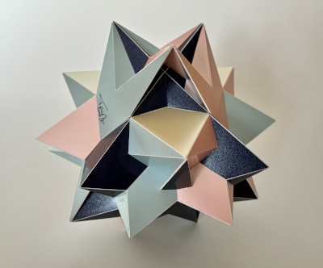

Tri-Composite of {7/3} Antiprisms

This polyhedron is a tri-composite of antiprisms, TCA in short. It is not a compound, but it is derived from a compound of three antiprisms with a {7/3} heptagram as base. The symmetry of the polyhedron belongs to the algebraic group D3xI, which means there is a 3-fold symmetry axis, three mirror planes that share the axis and three half-turns, for which the axes are in a plane orthogonal to the 3-fold axis.
In the model the edge length is 14.3 cm and I built this one in March 2026. I think it is a fascinating polyhedron, and I had great fun building it.
Links
Last Updated
2026-03-17